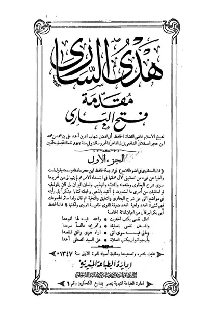

فتح الباري شرح صحيح البخاري
Fathul Bari
Baca Fathul Bari (فتح الباري شرح صحيح البخاري) karya Ibn Hajar al-'Asqalani secara gratis di Maktabah Ilmu: teks Arab, Indonesia (sebagian terjemah dibuat AI). Tanpa daftar, tanpa iklan.
Buka kitab iniLihat lemari ilmuDaftar isi
- فتح الباري شرح صحيح البخاري
- المقدمة الفصل الاول في بيان السبب الباعث لأبي عبد الله البخاري على
- الفصل الثاني في بيان موضوعه والكشف عن مغزاه فيه وتسمية المؤلف لكتابه
- الفصل الثالث في بيان تقطيعه للحديث واختصاره وفائدة اعادته له في
- الفصل الرابع في بيان السبب في إيراده للأحاديث المعلقة مرفوعة وموقوفة
- (قوله باب صلاة الضحى في الحضر)
- (قوله باب الزكاة على الزوج والأيتام في الحجر)
- (قوله باب من أهل في زمن النبي صلى الله عليه وسلم كإهلال النبي صلى الله
- كتاب الصوم)
- باب ما جاء في السقائف)
- المغازي باب غزوة بدر)
- باب بعث أسامة)
- في تفسيره سورة حم السجدة)
- التعوذ من الفتن)
- كتاب الاعتصام)
- الفصل الخامس في سياق ما في الكتاب من الألفاظ الغريبة على ترتيب الحروف
- فصل أا
- فصل أن)
- قوله إنما البدل)
- فصل ت س
- فصل ث ا
- فصل ج ا
- فصل ج د
- فصل ح ب
- فصل ح ق
- فصل خ ب)
- فصل د ه
- فصل ذ ا
- فصل ذ ع
- فصل ذ ي
- فصل ر ا
- فصل ر ب
- فصل ر ك
- فصل زب
- فصل زج
- فصل س ا
- فصل س ج
- فصل س د
- فصل ش ا
- فصل ش ت
- فصل ش ق
- فصل ص ب
- فصل ص ن
- فصل ض ا
- فصل ض ج
- فصل ض ف
- فصل ط ا
- فصل ط ف
- فصل ظ
- فصل ع ب
- فصل غ ب
- فصل غ ر
- فصل غ ض
- فصل غ ن
- فصل ف ا
- فصل ف ض
- فصل ق ب
- فصل ق ز
- فصل ق ي
- فصل ك ا
… dan 3818 bab lainnya.